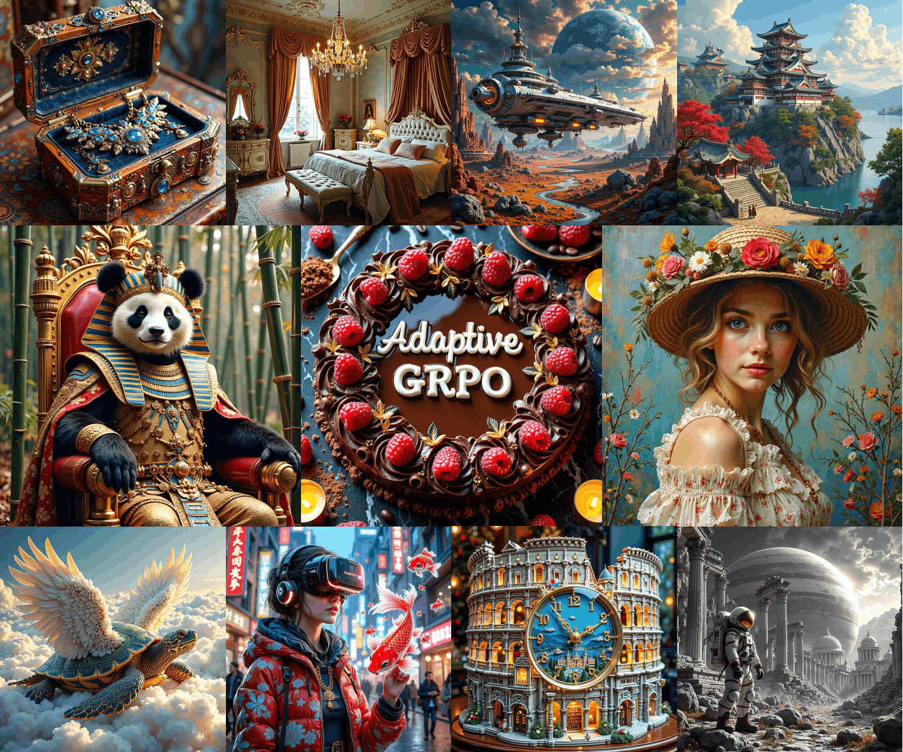
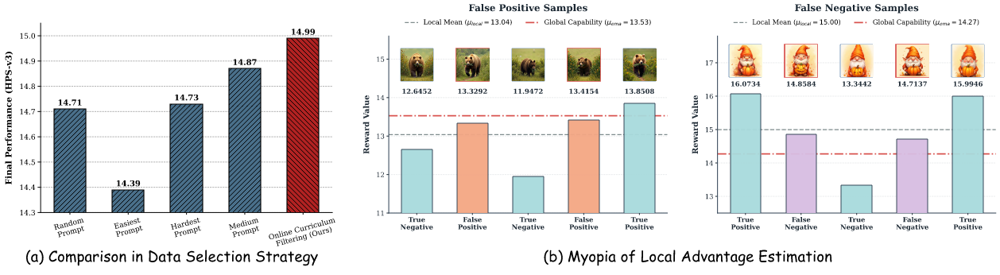
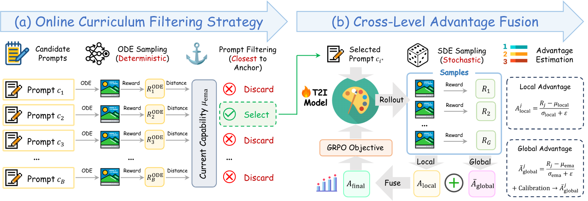
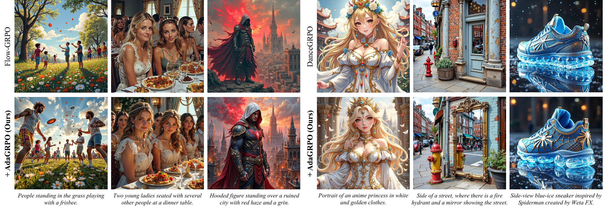
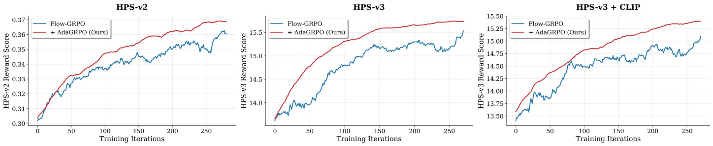
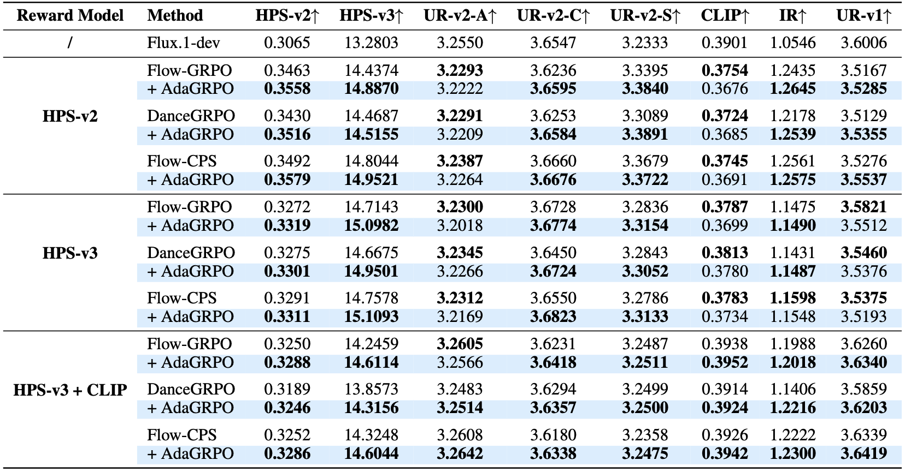
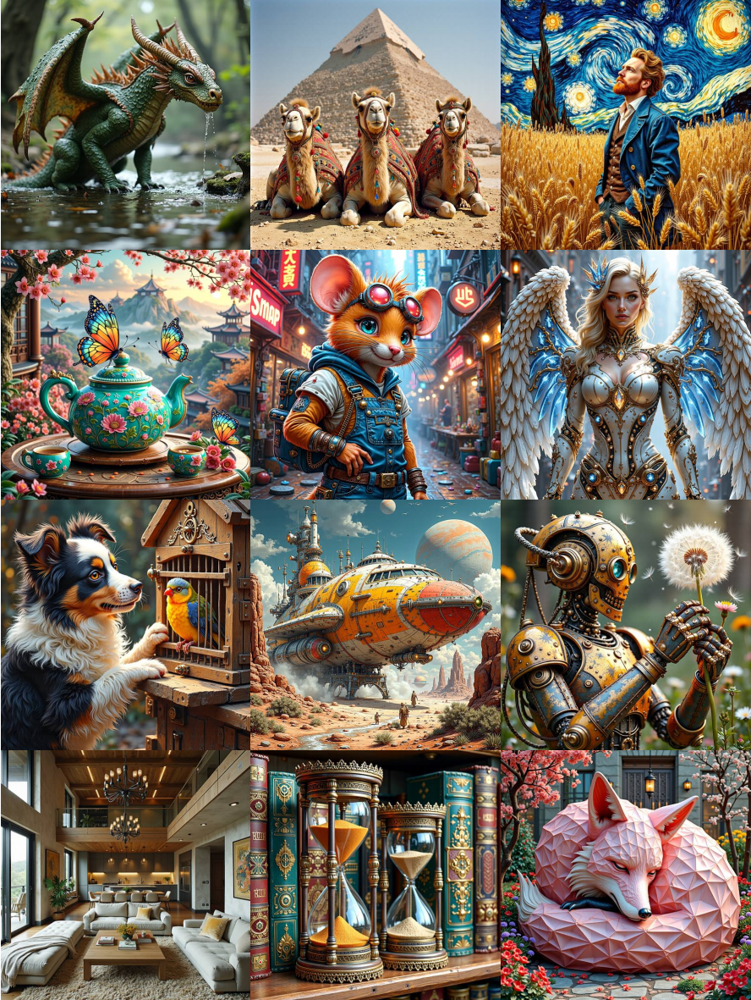

⚓️ AdaGRPO: A Capability-Aware Adaptive Enhancement for Flow-based GRPO


Group Relative Policy Optimization (GRPO) has demonstrated remarkable success in aligning text-to-image (T2I) flow models with human preferences. However, we have identified that the learning loop of current flow-based GRPO is fundamentally decoupled from the learner's current capability, suffering from critical blind spots at both prompt selection and advantage estimation: (i) Existing methods sample prompts randomly, overlooking the substantial impact of data selection on reinforcement learning (RL) efficacy—a factor proven crucial in GRPO for large language models; (ii) They evaluate sample quality solely relying on intra-group statistics, lacking a global perspective to accurately measure true policy improvement. To address these issues, we propose Adaptive GRPO (AdaGRPO), a novel capability-aware RL algorithm tailored for flow models. Specifically, AdaGRPO consists of two principal components: Online Curriculum Filtering Strategy: Dynamically tracks the model's proficiency and adaptively selects prompts that best match its current learning boundary; Cross-Level Advantage Fusion: Synergistically integrates fine-grained intra-group advantages with macro-level global advantages, providing a comprehensive and unbiased policy evaluation. As a lightweight, plug-and-play module, AdaGRPO can be seamlessly integrated with existing frameworks such as Flow-GRPO, DanceGRPO, and Flow-CPS. Extensive experiments demonstrate that AdaGRPO consistently drives performance gains while significantly stabilizes GRPO training for flow models. Our code will be released at AdaGRPO Repo.
Current flow-based GRPO frameworks are fundamentally decoupled from the model's evolving capability during training.
(1) Prompt Selection. Existing methods sample prompts blindly at random. Inspired by prompt selection strategies in RL for LLM, we investigate the impact of prompt difficulty on flow-based GRPO.
As shown in Fig.1 (a), training upon the "easiest" prompts (highest ODE rewards) causes severe performance degradation, while employing the "hardest" prompts (lowest ODE rewards) barely outperforms the random baseline.
In contrast, medium prompts drive notable gains, corroborating the established finding in LLM alignment.
However, the median reward of an isolated batch is biased, as it is detached from the model's aggregate proficiency
(e.g., the median of a universally challenging batch remains overly difficult for the model).
(2) Advantage Estimation. Current methods typically evaluate samples solely via intra-group rewards and thus exhibit severe "myopia".
They erroneously assign positive advantages to subpar samples simply because they are above the local intra-group mean, even if they fall below the model's global capability (false positives),
while penalize high-quality samples that fall below the local mean but actually surpass the global capability (false negatives), as shown in Fig.1 (b).
Without a reliable reference to gauge absolute policy progression, these local biases inevitably obscure the true optimization direction.

AdaGRPO is a novel capability-aware RL algorithm tailored for flow models, featuring two principal components.
(i) Online Curriculum Filtering Strategy is introduced to apply prompt selection.
Rooted in curriculum learning, this module maintains an Exponential Moving Average (EMA) of historical rewards to explicitly track the model's global generation proficiency, adaptively selecting candidate prompts perfectly at the current learning boundary.
This eliminates localized batch bias and ensures a highly constructive optimization landscape.
(ii) Cross-Level Advantage Fusion is proposed to calibrate advantage estimation.
By synergistically fusing intra-group local advantages with macro-level global advantages, samples are rewarded not only for outperforming their immediate peers but also for surpassing the model's past capability bounds, yielding an unbiased signal of absolute policy progression.

Qualitative comparisons with existing flow-based GRPO methods (with and without AdaGRPO). AdaGRPO consistently elevates the performance of baseline frameworks in visual fidelity, aesthetic appeal, and semantic adherence.

Quantitative assessments of the proposed AdaGRPO and baseline methods. Under both single reward (HPS-v2/v3) and multi-reward (HPS-v3 + CLIP) settings, AdaGRPO consistently brings substantial improvements to the prevailing baselines (Flow-GRPO, DanceGRPO, and Flow-CPS), validating its effectiveness and architecture-agnostic nature.


We present additional visual results of the proposed AdaGRPO. More samples can be found in our appendix.

If you find this work helpful, please cite the following paper:
@article{bu2026adagrpo,
title={AdaGRPO: A Capability-Aware Adaptive Enhancement for Flow-based GRPO},
author={Bu, Jiazi and Ling, Pengyang and Zhou, Yujie and Wang, Yibin and Zang, Yuhang and Wei, Tianyi and Zhan, Xiaohang and Wang, Jiaqi and Wu, Tong and Pan, Xingang and others},
journal={arXiv preprint arXiv:2606.06828},
year={2026}
}
Project page template is borrowed from FreeScale.